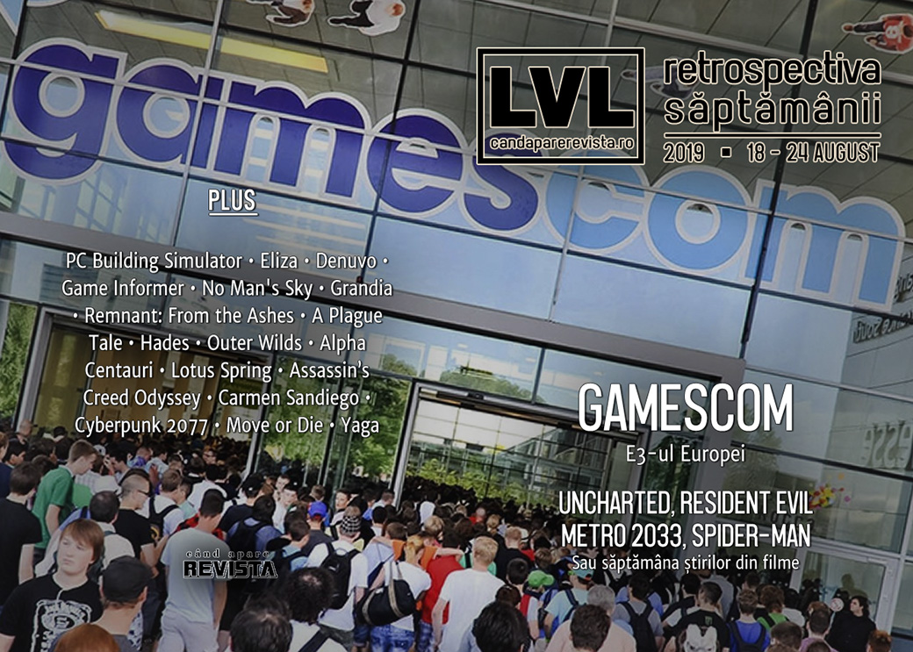

Retrospectiva săptămânii 18 - 24 august
Gamescom 2019 a fost evenimentul principal al săptămânii (și candaparerevista a fost acolo) și a venit cu multe trailere și anunțuri de jocuri, avem și multe știri despre filme bazate pe jocuri, Denuvo bagă DRM în jocurile de mobile, aflăm cât valorează piața de jocuri din UE, Valve face un Steam separat pentru China și citim o retrospectivă despre Alpha Centauri al lui Sid Meier.
Linkuri rapide:
- Știri
- Articole (critică, dev, design)
- Made în România
- Anunţuri şi lansări de jocuri
- Prăvălii de jocuri

Știri
- Un reboot al filmului Resident Evil e în lucru. (PCGamesN, PC Gamer)
- Și un film Metro 2033 e în producție. (Eurogamer, Polygon, PC Gamer, VideoGamesChronicle, Destructoid)
- Pe de altă parte, filmul Uncharted rămâne fără regizor, după plecarea lui Dan Trachtenberg, cel al 5-lea regizor care renunță de la demararea proiectului. În același timp, studioul înființat de Sony pentru producții in-house, PlayStation Productions, a preluat frâiele producției. (Quartz, Shacknews, VideoGamesChronicle, Eurogamer, GamesIndustry.biz)
- Sony cumpără Insomniac Games, studioul care a dezvoltat mega-succesul Spider-Man (Ars Technica, Kotaku, Eurogamer, Shacknews, VideoGamesChronicle). (Întâmplător sau nu, Disney și Sony nu au ajuns la o înțelegere în privința banilor, astfel că viitoarele filme Spider-Man vor fi produse exclusiv de Sony, iar personajul nu va mai apărea în filmele Marvel. (Polygon))
- Denuvo face acum DRM și pentru jocurile de mobil. (GamesIndustry.biz, Gamasutra)
- Piața de jocuri din Uniunea Europeană valorează peste 21 miliarde de euro. (GamesIndustry.biz)
- GameStop renunță la peste 120 de angajați în cadrul eforturilor de redresare, inclusiv o parte din redacția revistei Game Informer. (Ars Technica, GameDaily.biz, Games Informer, GamesIndustry.biz, Spiel Times)
Gamescom
În perioada 20-24 august a avut loc în Cologne, Germania, ediția 2019 a Gamescom, mega-evenimentul european dedicat jocurilor. Evenimentul a început cu o serie de prezentări de la Nintendo, Xbox și Google Stadia și o ceremonie de deschidere care a adus mai multe trailere și anunțuri.
Nintendo
- Everything that happened at the Gamescom Nintendo Indie World Showcase (Destructoid)
- Every game announced in Nintendo’s Indie World presentation (Eurogamer)
- Nintendo Switch Is Getting A Ton Of New Indie Games (Kotaku)
Xbox
- New Xbox Game Pass for PC features detailed at Gamescom 2019 (Shacknews)
- Everything Microsoft Showed On Today's Inside Xbox (Kotaku)
Google Stadia Connect
- Cyberpunk 2077 And More Games Coming To Stadia (Kotaku)
- Google reveals more games coming to Stadia, including Cyberpunk 2077 (Eurogamer)
Deschiderea Gamescom
- Every PC game at Gamescom so far (PC Gamer)
- Everything Announced At Gamescom's Opening Night Live (Kotaku)
- Everything that happened at Gamescom 2019’s E3-esque Opening Night Live presentation (Destructoid)
- Gamescom 2019: all the biggest news stories from the show (VideoGamesChronicle)
- Here's everything shown off during Geoff Keighley's Gamescom Opening Night Live (PCGamesInsider.biz)
Trailere
- Gamescom 2019: all the best trailers from the show (VideoGamesChronicle)
- All The Trailers From Gamescom 2019 (Kotaku)
Premii
- Sony, Ubisoft receive multiple honors in Gamescom Awards 2019 (GamesIndustry.biz)
- PS4 exclusive Dreams wins best of Gamescom 2019 award (VideoGamesChronicle)
Altele
- Gamescom’s opening show was briefly blocked by YouTube for Ubisoft copyright infringement (PC Gamer)
- 10 Of The Coolest Things I Saw At Gamescom 2019 (Games Informer)
- Seen At Gamescom 2019 (Games Informer)
- Gamescom 2019: did ray tracing finally find its killer app? (Eurogamer)
- Google still has no idea how to pitch Stadia (Polygon)
- The DeanBeat: How Germany does gaming events right with Gamescom (VentureBeat)
Articole (critică, dev, design)
- The fight against toxic gamer culture has moved to the classroom (The Verge)
- Reviling rodents (Wireframe magazine)
- Escaping the Inescapable (EGM)
- The Hidden Cost of Negative Game Reviews (EGM)
- Our favorite gaming studios, expos, museum exhibits—in a photo blowout (Ars Technica)
- Gray Areas (The Problem Machine)
Actualitate
Not-a-review
- Playing PC Building Simulator On My Switch Feels Weird (Kotaku)
- This Game Is Great, But I Can't Stop Playing Its Unimportant Solitaire App (Kotaku)
- No Man's Sky's Beyond Update Reveals The Game's Real Potential (Kotaku)
- Grandia Has Reignited My Love For Role-Playing Games (Kotaku)
- 'Remnant: From the Ashes' Is Multiplayer ‘Dark Souls’ I Didn’t Know I Needed (Vice)
- A Plague Tale Is One Of The Most Disturbing Games I’ve Played (Kotaku)
- By The Gods, I Just Want To Hang Out At Charon's Shop In Hades (Kotaku)
- Behind the hauntingly beautiful music of Outer Wilds (Gamasutra)
Industrie
- Underneath The International’s $33m prize pool, a flawed system in continuous need of repair (GameDaily.biz)
- The joyful representation of The Sims (GamesIndustry.biz)
- Restoring trust in Star Wars Battlefront II (GamesIndustry.biz)
- The future for platform holders is cooperation, not just competition (GamesIndustry.biz)
Istorie, retrospectivă
- On two decades of Sid Meier’s Alpha Centauri (Eurogamer)
- Typing games sure did get strange (PC Gamer)
- Three years on, No Man’s Sky is a messy wonder (Eurogamer)
- The Legend of Lotus Spring (The Obscuritory)
- Remembering the Early Days of BioWare with Co-Founder Trent Oster (USgamer)
Dev, making of, mecanici
- Tech Interview: How was The Witcher 3 ported to Nintendo Switch? (Eurogamer)
- How Ubisoft Kept Assassin’s Creed Odyssey Alive (Games Informer)
- As Game Budgets Balloon, Indie Devs Learn to Work Smarter (EGM)
- Aesthetic-Driven Development: creating Merchant of the Skies from announcement to Early Access launch (Gamasutra)
- Using UI as a means to tell a story, convey emotion, and create personality (Gamasutra)
Design, world-building, artă
- The Bottom Feeder: Why All Of Our Games Look Like Crap (The Bottom Feeder)
- Gaming Hardware Artist Turns Nintendo Famicom Into A Retro Computer (Kotaku)
- Rarely Seen '90s Carmen Sandiego Art By Bill Sienkiewicz (A Critical Hit)
- Cyberpunk 2077’s Night City strives to be a unique and grounded cyberpunk city (RPS)
Made în România
- Interviu pe Cavaleria.ro cu Cătălin Butnariu, președintele RGDA și fondatorul fondatorul Dev.Play. (Cavaleria.ro)
- Interviu cu Nicolae Berbece, fondatorul studioului Those Awesome Guys, studioul din spatele jocului Move or Die. (Medium)
- Interviu cu Cătălin Zima-Zegreanu de la Breadcrumbs Interactive, cei care lucrează la Yaga. (TheXboxHub)
Anunțuri și lansări de jocuri
Anunţate
- Syberia: The World Before (DSOGaming )
- Ghostrunner (PC Gamer)
- Spacebase Startopia (RPS)
- Kerbal Space Program 2 (Ars Technica)
- Orcs Must Die 3 (Destructoid)
- Humankind, un nou 4X de la creatorii lui Endless Legend și Endless Space (PC Gamer)
- Little Nightmares 2 (Games Informer)
- Port Royale 4 (Shacknews)
- Comanche (Shacknews)
- Everspace 2 (DSOGaming )
- Disintegration - proiectul lui Marcus Lehto, co-creatorul seriei Halo, are acum nume și trailer (Polygon)
- The Yakuza Remastered Collection (include Yakuza 3, Yakuza 4 și Yakuza 5) (Polygon)
- Knights of Honor II: Sovereign (GameSpace)
- SnowRunner, urmașul lui MudRunner (DSOGaming )
- The Bradwell Conspiracy (Shacknews)
- Farmer’s Dynasty (GameSpace)
Acum cu dată de lansare
- Final Fantasy VIII Remastered: 3 septembrie (Games Informer)
- Blasphemous: 10 septembrie (Eurogamer)
- Travis Strikes Again: No More Heroes: 17 octombrie (PC Gamer)
- Age of Empires II: Definitive Edition: 14 noiembrie (VentureBeat)
- Hades se lansează și pe Steam (early access) după 1 an de exclusivitate Epic Store: 10 decembrie (VG247)
- Journey to the Savage Planet: 20 ianuarie 2020 (Eurogamer)
- Mount & Blade II: Bannerlord: martie 2020 (RPS)
Amânate
- The Settlers: 2020 în loc de 2019 (PC Gamer)
Lansate
- 19 august: The Cycle (early access) (Epic Store)
- 19 august: Age of Empires: Definitive Edition ajunge pe Steam (Steam)
- 20 august: Remnant: From the Ashes (Steam)
- 22 august: Oninaki (Steam)
- 22 august: Life is Strange 2 – Episode 4 (Steam)
- 23 august: Telling Lies (Steam, gog.com)
- 23 august: Mable & The Wood (Steam, gog.com)
- 23 august: Plunge (Steam)
- 23 august: Death Crown (Steam)
Prăvălii de jocuri
Știri
- Steam disables payments in Argentine currency, citing economic instability (GameDaily.biz)
- GOG has fulfilled two million Community Wishlist requests (GamesIndustry.biz)
- Valve says turning away researcher reporting Steam vulnerability was a mistake (Ars Technica)
Articole
- Valve talks Steam China, curation and exclusivity (Eurogamer)
- The Times They Are A-Changin': How Valve is trying to update Steam for the modern games industry (PCGamesInsider.biz)
- Thronebreaker showed GOG that “exclusives don’t work for us” (PCGamesN)
- Game stores: you need more real-time charts! (Gamasutra)
Jocuri noi în catalog
- Devil May Cry 5, Ape Out, and Age of Empires: Definitive Edition Headline Upcoming Xbox Game Pass Titles (USgamer)
- Destiny 2 Steam migration starts today, here’s how to begin the process (Destructoid)
Jocuri gratis și free weekends
- For Honor is free to keep this week on Uplay (PC Gamer)
- Fez is the latest Epic Games Store free game this week (Shacknews)
- Xbox Game Pass game list for PC, plus all new games for August 2019 (RPS)
- Battlefleet Gothic: Armada 2 is free to play on Steam this weekend (PC Gamer)
Reduceri și promoții
- Xbox Gamescom sale slashes the price of Sekiro, Resident Evil 2, Call of Duty and more (Eurogamer)
- GOG celebrates two million community wishlist fulfilments (PC Gamer)
- Best PC gaming deals of the week – 23rd August 2019 (RPS)
- Weekend PC Download Deals for Aug 23: The Division 2 goes half-off (Shacknews)
- Weekend Console Download Deals for Aug 23: Get over here! (Shacknews)
- Assassin’s Creed Odyssey, The Division 2 and Rainbow Six Siege all half price or better this weekend (PC Gamer)
Retrospectiva săptămânii este rubrica duminicală în care trecem în revistă evenimentele săptămânii de pe frontul de gaming: știri şi articole (scrise de alții, bineînțeles, că e mai ușor aşa), industrie, lansări, oferte de jocuri, toate numai de savurat la cafeaua de duminică dimineața.
De asemenea, rubrica e deschisă oricui vrea și poate contribui. Dacă ai citit vreun articol sau vreo știre interesantă și crezi că merită incluse în retrospectiva săptămânii, te așteptăm pe forum pe unul dintre topicurile dedicate: Știri, Articole, Gaming România].